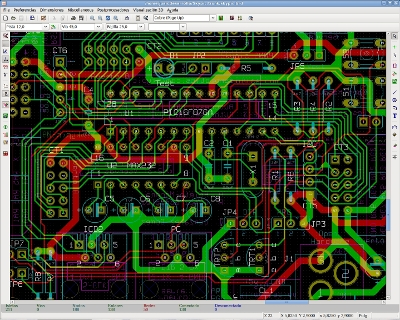
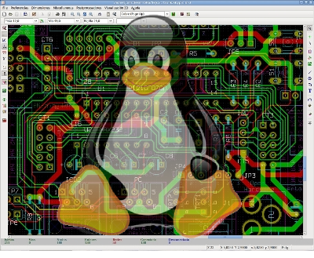

[hardware libre (I)]
Muchos de los diseños de hardware libre pertenecen al grupo II,
y están diseñados con la herramienta Eagle.
Este software, en mi opinión, es muy bueno y nos ha permitido a muchos
diseñadores electrónicos poder usar plataformas alternativas como Linux o Mac.
Además existe una versión freeware limitada, gratuita, que permite que cualquiera se
lo pueda instalar y usar. Por ello, a nivel técnico sólo tengo alabanzas para el Eagle.
Sin embargo, al ser software propietario, aparecen restricciones a la hora de compartir los diseños.
Son estas restricciones, y NO la calidad del Eagle, lo que conviene plantearse a la hora de hacer diseños libres.
Normalmente, los usuarios hacen hardware libre, pero sin tener en mente estas restricciones.
En este post las enumeraré y analizaré.
Restricciones
Restricció 1: Uso NO comercial. La versión
freeware del Eagle es gratuita. Sin embargo, sólo se puede emplear para hacer
diseños para uno mismo.
La licencia no permite que los vendas o ganes dinero con ellos.
Por ello, el hardware diseñado con esta versión NO ES LIBRE,
ya que se viola la libertad de uso. El usuario tendría que tener la libertad de poder usarlo con fines comerciales.
Para disponer de esta libertad, hay que pagar la licencia.
Restricción 2: Coste de la licencia.
Hay que pagar un licencia para hacer hardware libre con Ealge.
La más barata cuesta $49 y permite adquirir una versión limitada en funcionalidad.
No es mucho dinero, si vives en occidente. Pero esta restricción implica
un gran esfuerzo para los usuarios de los paises menos desarrollados.
Si esta versión limitada no es suficiente para hacer el hardware que queremos,
se puede comprar la versión estándar ($747) o
la profesional ($1494) (licencias sólo para 1 usuario).
Aquí podéis consultar la lista completa de precios.

Restricció 3: Limitaciones en la placa.
Cuando se usa tanto la versión freeware como la “barata” de $49,
las placas que podemos diseñar están limitadas.
El tamaño máximo es de 10x8 cm, no se pueden emplear más de dos caras y
el esquema no puede ser jerárquico (sólo una hoja por placa).
Las limitaciones se relajan en la versión estándar ($747) y desaparecen en la profesional ($1494).
Restricción 4: Planos en formato propietario.
Nuestros diseños se almacenan en un fichero cuyo formato sólo es conocido por Cadsoft.
Esto presenta varios inconvenientes. El principal es
la incertidumbre en la perdurabilidad de la información.
¿Quién me garantiza que Cadsoft no rompa la compatibilidad en las versiones futuras y que
no pueda abrir mis propios diseñoos en el futuro?.
Otro es la imposibilidad de que terceros desarrolladores de software
hagan aplicaciones que puedan leer los planos. Por ejemplo, no se podría
hacer herramientas que creen automáticamente “footprints” parametrizados o
que sacasen estadísticas.
Este tipo de software sólo lo puede hacer Cadsoft, por lo que la comunidad de
software libre no puede aportar nada.
Restricción 5: Multiplataforma limitada.
Aunque una característica muy importante del Eagle es que es Multiplataforma,
sólo se puede ejecutar en las tres plataformas pre-establecidas por Cadsoft. Pero…
¿Qué pasa con FreeBSD? ¿Se puede ejectuar eagle en un notebook con procesador mips?
¿O en un teléfono móvil de última generación? La respuesta es NO.
Sin embargo, esto no es así con las aplicaciones libres, que al estar disponible su
código fuente son potencialmente portables a cualquier plataforma.
Hardware libre y Kicad
Todas estas restricciones desaparecen cuando se usa software libre.
Por ello, si estamos interesados en el hardware libre y queremos hacer diseños libres
que no tengan restricciones, hay que plantease el uso de alternativas libres.
Una muy interesante es el Kicad.
El hardware libre es aún más libre si se diseña con herramientas libres.
Y esa es la motivación que me ha llevado a comenzar la migración de la
tarjeta Skypic, hecha con Ealge, a Kicad.
Esta nueva versión (Skypic-2009) tendrá las mismas funcionalidades (con pequeños cambios)
pero todas las restricciones para su compartición desaparecerán.
Está accesible en este repositorio.
Obijuan
Lo malo del KiCAD es que todavía le falta algo de recorrido para comparse con el Eagle (aunque no mucho) y sobretodo muchísimo recorrido para comparse con herramientas profesionales como el Altium.
Para la gente que empieza y que va a hacer cosas sencillas si que es bueno usar el KiCAD, sin embargo a la que te vas a cosas más complicadas me da la sensación que se queda algo corto (quizás lo mío es deformación profesional).
Por otro lado el desarrollo de KiCAD sigue avanzando y esperemos que pronto se parezca mas a un software profesional.
¿Alguien se anima a colaborar?
S2
Ranganok Schahzaman
Hola Ranganok,
Tu comentario es muy interesante. Creo que tengo que poner una entrada en el blog sobre ello 😉 En realidad, yo también pensaba así (antes había usado Orcad, Tango e Eagle) cuando comencñe hace años a usar el Kicad.
El kicad es libre y por tanto extremadamente dinámico. La situación que comentas tal vez podría ser el escenario de hace tres años, pero no ahora. En la lista de usuarios[1] hay una actividad incesante. Hay más de 2690 apuntados, de diferentes ámbitos: Universidad, Empresa, particulares, etc. La disyuntiva Kicad-Eagle-Altium-Orcad hace tiempo que se dejó de comentar en la lista por estar superada. Se han realizado diseños muy complejos, de hasta 16 capas, comercializados por empresas de Taiwan e incluso hay diseños que funcionan para frecuencias muy altas (micro-ondas). Todos ellos diseñados con Kicad.
Tanto es así que hay un grupo que está migrando el telfono móvil libre OpenMoko a Kicad[2][3]. La electrónica del OpenMoko es muy compleja y no se puede diseñar con cualquier herramienta. Todos los esquemas están en el repositorio[4] (ya van por la revisión 5643!)
La lista de desarrollo del kicad está muy poblada para ser de desarrollo. ¡Hay 424 miembros! No todos son desarrolladores principales, pero todos los de esa lista colaboran en su desarrollo. Esto significa que prácticamente todos los días hay parches nuevos enviados. De hecho, los kicads empaquetados que nos podemos bajar de las últimas distribuciones (Ubuntu, Debian, Suse, etc…) están obsoletos comparados con las versiones en el SVN.
Por ello, Kicad, al día de hoy, es un monstruo que sigue creciendo. Y hace tiempo que está maduro para hacer placas profesionales.
Gracias otra vez por comentario. Se me había olvidado hablar sobre su madurez, así que lo pondré en una tercera entrada 😉
[1]http://tech.groups.yahoo.com/group/kicad-users/
[2]http://www.tuxbrain.com/otro-gran-paso-en-hardware-abierto-de-openmoko
[3]http://wiki.openmoko.org/wiki/Gta02-core
[4]http://svn.openmoko.org/trunk/gta02-core/
Supongo que tendré que darle otra oportunidad al KiCAD. Sin embargo el hecho de hacer placas profesionales o con una cierta complejidad con este programa no tiene nada que ver con lo que estaba pidiendo, ya que yo mismo he realizado diseños profesionales en el TANGO (para MS-DOS) y la ultima vez que probé el KiCAD estaba un poco por encima que el TANGO (ya que la interacción entre el esquemático y el PCB la realizaba mejor).
A lo que me refiero sobretodo es a las ayudas a la hora de realizar el diseño tanto el esquemñatico (nombramiento automático, ordenación de las librerías, facilidad de crear nuevos compontentes, etc), como el PCB (polígonos, eliminación automática de lazos, ayudas en el enrutado manual, reglas potentes de enrutado automático, etc.), que no se si ya está implementado en el KiCAD (como he dicho ya hace que no uso el programa), pero son cosas que se hechan mucho en falta si las has probado y no están en el siguiente programa que usas.
S2
Ranganok Schahzaman
Hola Ranganok,
Con diseños profesionales me refiero a diseños hechos por ingenieros que viven profesionalmente del diseño electrónico. En la lista del Kicad hay muchos de ellos. Al principio Kicad era sólo para “jugar en casa”, usado por estudiantes o particulares. Ahora no, hay gente que lo usa profesionalmente, viviendo de ello.
En cuanto a las características que nombras, claro, están todas :-). Si no encuentras alguna, pregunta en la lista. La única que no está integrada en el IDE del Kicad es el Rutado automático avanzado, que hay que hacerlo exportando el netlist, usar freerouting y luego importar el resultado. Hay usuarios haciendo scritps para que esto se haga automáticamente y desarrolladores integrándolo en el propio kicad (No lo he mirado, pero es posible que ya esté en la versión del SVN).
Yo lo que te recomiendo es que uses la herramienta que más te guste. Si ya sabes usar el Eagle, sigue usando Eagle. Si usas el Pads, sigue con el Pads. El kicad es muy recomendable para la gente que quiera hacer hardware libre. Usando Kicad se eliminan todas las restricciones para su compartición, por lo que es más fácil crear una comunidad de desarrolladores hardware al rededor de un diseño, similar al del software libre. Y por supuesto, todo ello de forma legal.